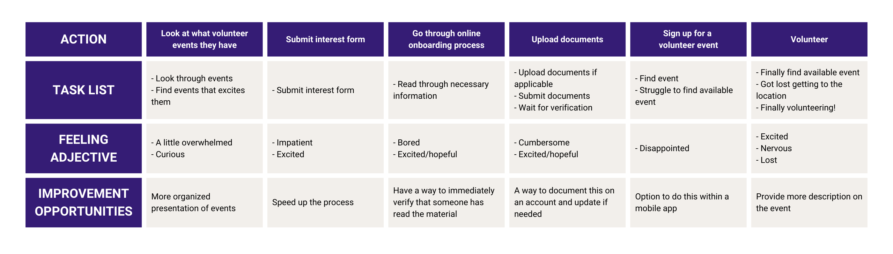

Refugee Health Alliance (RHA) is a 501(c)(3) nonprofit dedicated to providing ethical, holistic, and culturally-inclusive care and advocacy for all displaced and vulnerable populations along the US-Mexico border. RHA mobilizes a large group of volunteers, ranging from college students to licensed healthcare providers.
Role - Case Study
Improving the flow of onboarding volunteers
New volunteers want to join, but the onboarding process isn't structured or intuitive to use. With the current scheduling system, the free clinic can be overstaffed or understaffed on different days.
Design a mobile app to direct the volunteer flow of RHA, which allow volunteers to sign in, read important information, sign up for events, and cancel events. This would maximize the experience and efforts of each volunteer and reduce the time spent onboarding new volunteers.
I conducted a quick interview with 5 people using the following interview script that I created. The concept behind designing the interview questions were based off the ethnography fieldguide at Stanford's Design School, which aims to capture stories and emotions from people.
I asked volunteers to map out a user-generated journey map (one person's user journey map is pictured below). Afterwards, I built empathy maps to better understand and assess the needs of the group I'm designing for. One main user group identified were college students from Southern California colleges (ie. UCLA, UC San Diego, Clairemont Colleges, others). The research showed us that it was hard for volunteers to find availabilities, and volunteers often wouldn't cancel if they couldn't go.
Problem statement - Angelica is a pre-med second year college student who needs to volunteer for a free clinic because she wants to get experience working in clinical settings.
Mapping Angelica's user journey showed us that having an app for the volunteer flow would solve some of the issues that pop up.
I split the flow into 3 main categories:
I created a low-fidelity prototype. The flow let the user sign up, onboard, and schedule for a volunteer event.
Type: Unmoderated usability study
Participants: 6 participants
Length: 30 minutes
I conducted two rounds of usability studies. Findings from the first study helped guide the designs from wireframes to mockups. The second study used a high-fidelity prototype and revealed what aspects of the mockups needed refining.

Lower Priority Findings (Future Steps)
I integrated a chat feature into the app because volunteers reported:
The high fidelity prototype let users sign in, onboard, schedule for volunteer events, and also chat with other volunteers.
Impact
The app simplifies the volunteer flow.